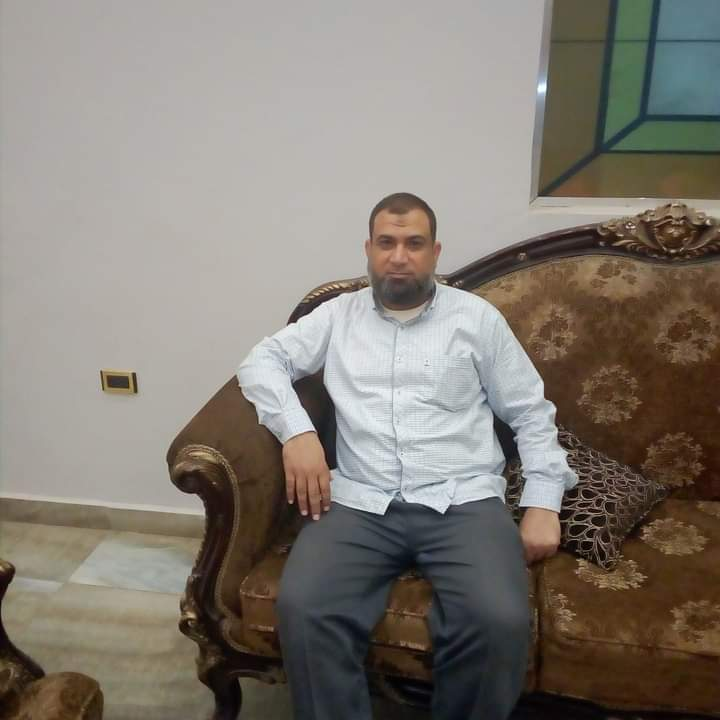

صدقه جاريه
علي روح الاستاذ محموداحمد عبدالفتاح
لا تنسوا صالح الدعاء
made by zyad abdelfttah

اللهم اغفر له اللهم ارحمه
النبأ
النازعات
عبس
التكوير
الانفطار
المطففين
الانشقاق
البروج
الطارق
الاعلي
القيامه
الفجر
البلد
الشمس
الليل
الضحي
الشرح
التين
العلق
القدر
البينه
الزلزله
العاديات
القارعه
التكاثر
العصر
الهمزه
الفيل
قريش
الماعون
الكوثر
الكافرون
المسد
الاخلاص
الفلق
الناس
الفاتحه
ايه الكرسي